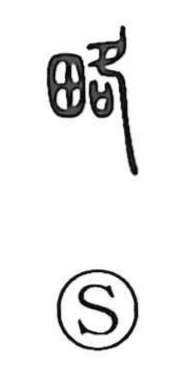

略

Kun: hobo | On: ryaku
abbreviate ・ omit ・ outline ・ stratagem ・ to seize ・ almost
Explanation
A phono-semantic graph with 各 as its phonetic, 略 takes its on reading from the same source seen in 洛 and 絡. The Shuowen glosses it as the act of managing and regulating territory, hence the core sense of running affairs: to govern, to carry on, to devise policy—hence ‘stratagem.’ By association with 掠 (ryaku, ‘to plunder’), it also comes to mean taking by force, as in 略取, and thus ‘to seize’ or ‘to rob.’ From this managerial and selective sense grows its use for what is handled in outline rather than in full: ‘outline,’ ‘roughly, almost’ (as in 略知), and the idea of abbreviation and omission (省略, 略解). In short, it moves from governing and planning to capturing, and then to the concise treatment of things.